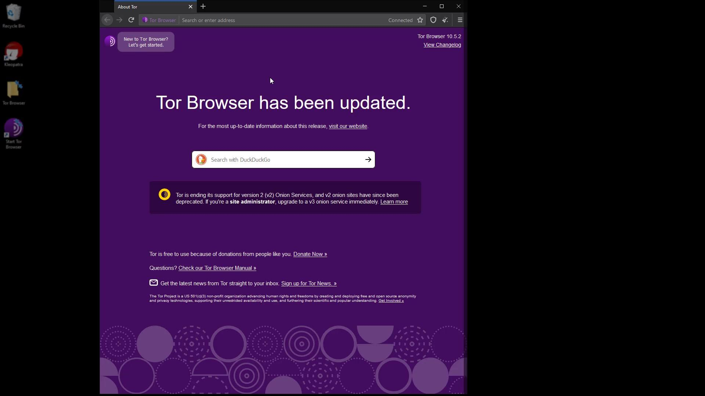
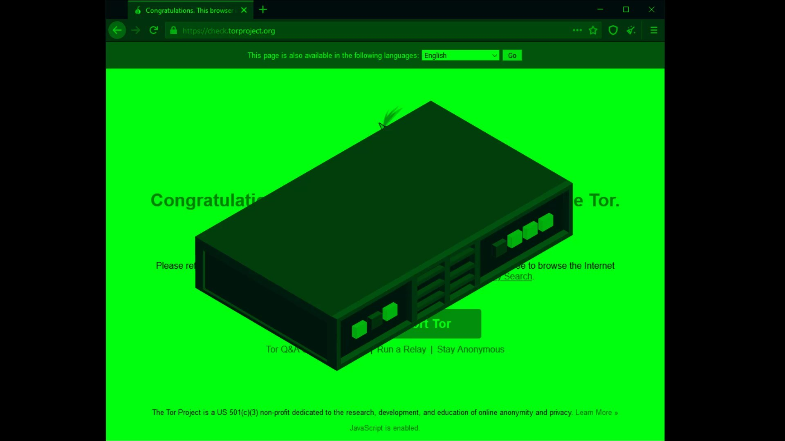

Using Tor Browser
When i talk about the structure of the Tor network, i have listed the methods you can use the Tor. If you remember, i mentioned that using Tor Browser is not the best way among these methods. The reason why using Tor Browser is not the best method is because the operating system we use the browser is not strictly security-oriented. So, in fact, we will be using the Tor browser in other methods that we consider safer in the continuation of the course. Since the operating systems that we will use the Tor browser for in the methods we consider safe are fully configured for privacy, they will provide a much more secure environment than any other operating system.
So actually using the Tor browser on Android, Windows, MacOS, or a standard Linux distribution is not a completely inefficient way, but it is not the best way for security and privacy. The vulnerabilities that may occur in operating systems or software on the operating system may cause the anonymity and privacy features provided by the Tor browser to become meaningless. In short, using the Tor browser on standard operating systems is practical, but alone is insufficient for security. Without further ado, let's continue the explanation by talking about the use of the Tor browser and its various settings.
Although the installation and verification processes differ slightly for different operating systems, the use of Tor Browser after it is installed is very similar for all systems. In other words, all system users can easily follow the instructions here. I will perform the lectures on Windows for now, you can follow it on any operating system you want.
I double click on the application to open the Tor browser.

As you can see, a simple browser interface that doesn't look much different from the standard Firefox browser welcomed us. Now let's check our connection by going to "check.torproject.org" to test whether we are properly connected to the Tor network.

On the page that opens, we can confirm that our connection is routed through the Tor network as it should. At this point, if you have not encountered this confirmation statement, you may have an internet connection where the Tor network is blocked.

In such cases, you can choose to use Tor bridge connection or VPN to bypass the block. We will talk about VPN usage in the following lectures, for now, let's continue with the explanations by talking about the Tor bridge connection.

In addition, even if you can access the Tor network smoothly while you follow this lecture, it will be useful to learn how to use the bridge connection in case you encounter a potential block. So, even if your Tor connection is fine, please continue course without leaving the curriculum layout.